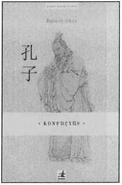

Tarihte komşu olmamıza ve yüzyıllar boyunca çok yakın
ilişkilerde bulunmamıza rağmen Çin, ne yazık ki bizler için hep bilinmezliğini ve gizemini korumuştur.
Yeryüzünün en eski yerleşik kültürlerinden birisine sahip olan Çin hakkındaki bilgilerimiz hep sınırlı kalmış. Bu ülkeyi ve kültürünü çoğunlukla batılı kaynaklardan tanımışız.
Hiç kuşkusuz Çin kültürü denilince ilk akla gelen adlardan birisidir Konfüçyüs. Yaşamı ve öğretisi üzerine çoğunlukla batı dillerinden çevrilmiş birkaç kitap dışında pek eser bulunmaz. Bu yüzden de Çin'in bu büyük düşünürü hakkındaki bilgilerimiz genellikle ikinci el kaynaklardan yapılan çevirilerle sınırlıdır. Üstelik bu çevirilerin çoğu da hatalarla doludur.
Bu kitapta Konfuçyüs'ün yaşamı ve öğretisi, öğretisini oluşturan temel ilkeler, Çin'de ortaya çıkmış düşünce akımları anlatılmaktadır. Bu eser, Ankara Üniveristesi, Sinoloji Anabilim Dalı Öğretim Üyesi Doç Dr. Bülent Okay tarafından geniş bir Çince kaynak taramasına dayanarak hazırlanmıştır. Konfuçyüs'ün dünyasına bir giriş niteliği taşıyan bu kitabı, siz okuyucularımızın değerlendirmesine sunuyoruz.